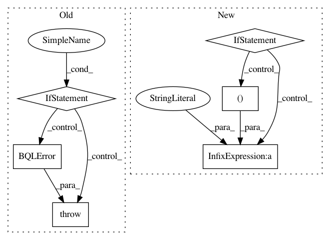

507cf257bc195742af09b8990e77b13f4a10ab42,src/metamodels/cgpm_metamodel.py,CGPM_Metamodel,initialize_models,#CGPM_Metamodel#Any#Any#Any#,282
Before Change
SELECT COUNT(*) FROM bayesdb_cgpm_modelno WHERE generator_id = ?
""", (generator_id,))
n_existing = cursor_value(cursor)
if n_existing > 0:
raise BQLError(bdb,
"Incremental model initialization not supported.")
// Get the schema.
schema = self._schema(bdb, generator_id)
// Initialize an engine.
variables = schema["variables"]
After Change
// Confirm requested modelnos do not include existing models.
intersection = [m for m in existing if m[0] in modelnos]
if intersection:
raise BQLError(bdb,
"Cannot initialize existing models: %s." % (intersection,))
// Add the states.
engine.add_state(
count=len(modelnos), multiprocess=self._multiprocess)
// Update bayesdb_cgpm_modelno table.
In pattern: SUPERPATTERN
Frequency: 3
Non-data size: 6
Instances
Project Name: probcomp/bayeslite
Commit Name: 507cf257bc195742af09b8990e77b13f4a10ab42
Time: 2017-06-17
Author: fsaad@mit.edu
File Name: src/metamodels/cgpm_metamodel.py
Class Name: CGPM_Metamodel
Method Name: initialize_models
Project Name: probcomp/bayeslite
Commit Name: 58c667e1ad18f2b247f857860269fb5da68e9936
Time: 2015-06-02
Author: riastradh+probcomp@csail.mit.edu
File Name: src/compiler.py
Class Name: BQLCompiler_1Col
Method Name: compile_bql
Project Name: probcomp/bayeslite
Commit Name: da13077ee7328382e04fc2cfa5aec6acaf25155d
Time: 2016-01-19
Author: riastradh+probcomp@csail.mit.edu
File Name: src/metamodels/crosscat.py
Class Name: CrosscatMetamodel
Method Name: _crosscat_data